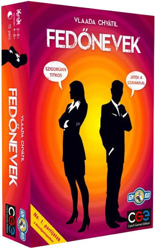
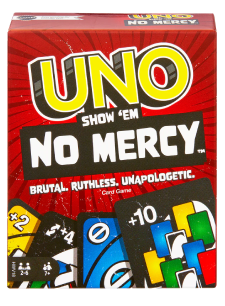
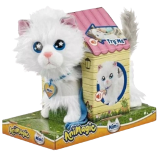

FEDŐ NEVEK
A szókincset és a kreativitást fejlesztő társasjáték

UNO NO MERCY
A szókincset és a kreativitást fejlesztő társasjáték

SÉTÁLÓ MIMI CICA
A szókincset és a kreativitást fejlesztő társasjáték
Társasjátékok
Elektronikus
Műanyag
Airsoft